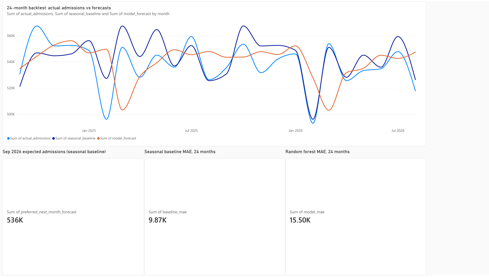
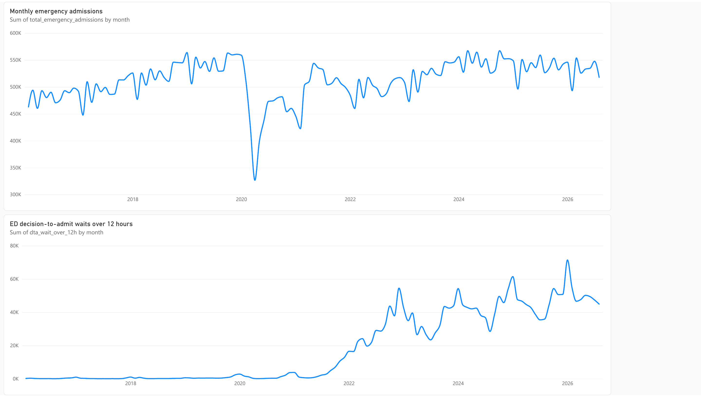
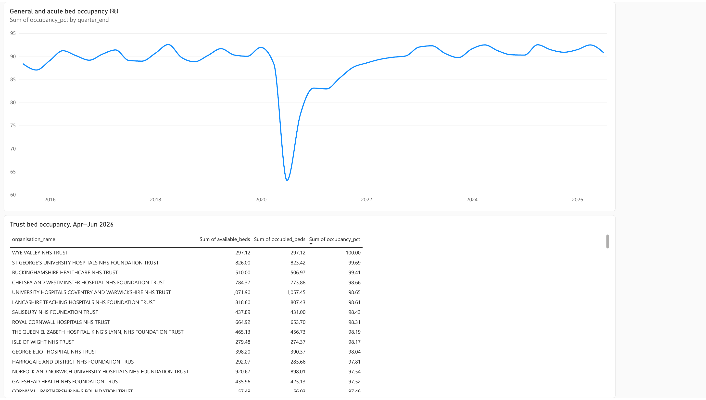

Project report · Healthcare analytics
Hospital Patient Flow
& Capacity Analytics
Understanding emergency demand, bed pressure, and the limits of a more complex forecast.
Technologies Python · SQL · SQLite · scikit-learn · Power BI
Project overview
I built a reproducible pipeline and three-page Power BI report using published NHS England statistics. The work connects source-file ingestion, SQLite analysis, forecast evaluation, and reporting to answer two questions: how has emergency demand changed, and how well can next month’s admissions be estimated?
The analysis covers 127 months of emergency demand, 45 quarters of bed data, and a latest capacity snapshot of 153 NHS trusts. These are aggregate hospital statistics, with no individual patient records.
How I built it
- Make the sources reproducible. Import NHS workbooks and CSVs into SQLite, pinning source URLs and SHA-256 hashes so a revised publication cannot silently change a rebuild.
- Check the measures before reporting. Reconcile admission routes and types, verify consecutive reporting periods, recalculate occupancy, and reconcile the latest trust bed totals to the national quarter before handing the exports to Power BI.
- Compare forecasts on later dates. Test a random forest against the same month last year over September 2024–August 2026. Both methods estimate the same monthly admissions target across 24 test months.
Analytical decisions
Calendar features, lagged admissions, and a shifted three-month average use only information available before the target month. The random forest is fitted on data through August 2024 and held fixed during evaluation; prior-month inputs update with actual observations. This tests repeated one-month-ahead forecasts, rather than a single forecast of the next two years.
Emergency demand and bed occupancy have different reporting periods and provider coverage. I keep them separate instead of joining them into a combined rate. The final model is refitted through August 2026 only after evaluation, while the better-performing seasonal baseline remains the preferred demonstration forecast.
Results
The same-month-last-year baseline performed better: its mean absolute error was 9,874 admissions per month, compared with 15,501 for the random forest. Adding a more complex model did not improve accuracy on this test period.
| Forecast method | Mean absolute error Admissions / month |
|---|---|
| Random forest | 15,501.42 |
| Same month last year · preferred | 9,874.21 |


Figure 1. Forecast comparison
Actual admissions, both forecast methods, and forecast errors. Select the screenshot to enlarge.
Supporting reports: emergency demand and bed pressure


Figure 2. Emergency demand
August 2026 recorded 517,868 emergency admissions and 44,951 waits over 12 hours after a decision to admit. These waits are threshold counts, not average waiting times or total time in the emergency department.


Figure 3. Bed pressure
General-and-acute overnight occupancy was 90.85% for April–June 2026: average occupied beds divided by average available beds. This quarter is separate from the August emergency-demand figures.
Data, limitations & next steps
Emergency demand covers February 2016–August 2026; bed data covers June 2015–June 2026. Provider coverage, reporting changes, and the pandemic affect comparisons over time. The report describes national demand and capacity rather than individual patient flow or improvements in care.
The baseline’s September 2026 forecast of 535,580 admissions uses information through August 2026. It is a historical forecast, and the Power BI screenshots are saved report views. The 24-month evaluation does not establish performance for other periods or individual hospitals.
Takeaway & next step. A useful forecasting project needs a credible baseline and clearly defined measures before it needs a more complex model. Next, I would test performance across multiple historical forecast origins and add prediction intervals to communicate uncertainty alongside the point estimate.
Technical evidence: forecast implementation · reconciliation checks · published results · report PDF.
Original sources: NHS England emergency statistics · overnight bed statistics.